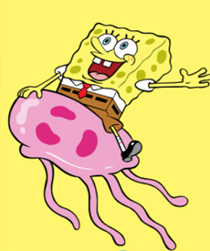
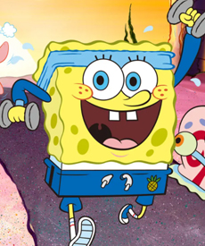
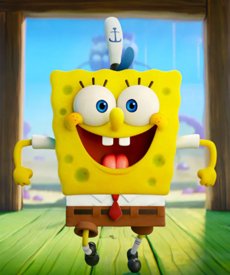

海绵宝宝
《海绵宝宝》（SpongeBob SquarePants）是一部由史蒂芬·海伦伯格原创，舍曼·科恩、沃特·杜赫、山姆·亨德森、保罗·蒂比特、沃尔特·道恩 [21] 等导演，汤姆·肯尼、比尔·法格巴克、罗杰·布帕斯等配音的美国喜剧动画，于1999年7月17日在尼克国际儿童频道开播。
央视少儿频道从2006年1月29日大年初一晚20：00开始播出。
《海绵宝宝》的故事情节主要围绕着主角海绵宝宝和他的好朋友派大星、邻居章鱼哥、上司蟹老板等生物展开，场景设定于太平洋海底，一座被称为比奇堡的城市。2005年1月30日，该片荣获第32届安妮奖授予的“最佳TV动画制作”奖 [1] 。
这部动画除了固定描绘的卡通场景与人物之外，也会穿插一些真实的物件或人物：例如曾出演《海滩游侠》与《霹雳游侠》的大卫·哈塞尔霍夫，以本人的身份出演了几集。但海绵宝宝卡通的内容基本上与海洋知识无关，甚至夸大到完全不合乎科学与常识，例如海底生火、海底冲澡等，剧集内容也会时不时的嘲笑精致艺术和章鱼哥的劳工权益想法。
|  |  |
 |  |